Compresseur de données le plus connus.

STZIP v2.6 - 111 Ko [ARCHIVER]
Atomik Cruncher v 3.6 de VMAX - 8 Ko [CRUNCHER]
GEMVIEW v 2.2
- 178 Ko [IMAGERIE]
Packer de fichiers
ou programmes dans 4 formats de compressions différents.
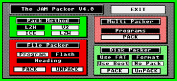
JAMPACKER v 4.0
- 27 Ko [PACKER/DEPACKER]
Version accessoire
qui permet de créer un disque virtuel en mémoire.
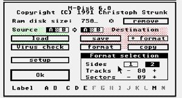
MDISK v 6.0 - 15 Ko
[RAMDISK]
Logiciel qui scinde
des programmes ou des données en plusieurs fichiers. Version PC et ST.
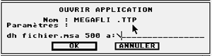
MEGAFLI
- 22 Ko [TRANSFERT PC/ST]
MSA v 2.3+
- 25 Ko [IMAGE DISK]
MEGA RIPPER
-
143 Ko au format MSA [RIPPER]
Permet de convertir
différents formats d'images de l'Atari (SHAREWARE).
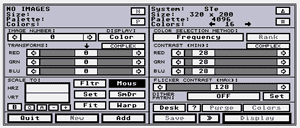
SPEED OF LIGHT v 3.8 - 224
Ko [IMAGERIE/GRAPHISME]
Compresseur de données
le plus connus.
STZIP
v2.6 - 111 Ko [ARCHIVER]
Un créateur
de loader/dentro très complet.

Loading
Construction Kit v1.93F - 272 Ko
au
format ST [DEMO]
Un créateur
de demo/dentro très complet sur 3 disks.
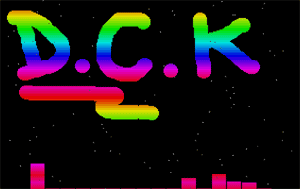
Demo
Construction Kit fr [DEMO]
Disk 1 (453
Ko) au
format ST
Disk 2 (276
Ko) au
format ST
Disk 3 (385
Ko) au
format ST
Doc française
(22 Ko) donner
par cb (site AtariForce)
Accessoire copieur
de disquette (moyenne résolution).
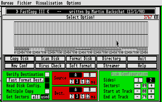
Fcopy
3
- 20 Ko [COPIEUR]
Autre programme
copieur de disquette très complet.
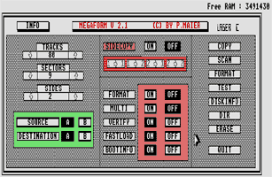
Megaform
v2.1 - 25
Ko [COPIEUR]
Configuration du
bureau/disquette au démarrage.
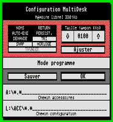
Multidesk
-
18 Ko [CONFIGURATION]
Programme d'information
très complet sur votre ATARI ST.
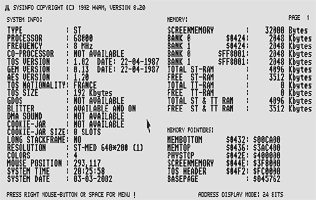
SYSINFO
v0.20
- 54 Ko [INFO
SYSTEME]
Programme très
util pour checker la bonne santé de la mémoire de son ST.
(A exécuter
absolument pour tester l'ajout de mémoire)
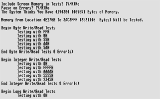
TESTRAM
- 5
Ko [INFO
SYSTEME]
Programme qui accélère
la vitesse de l'ATARI STF.
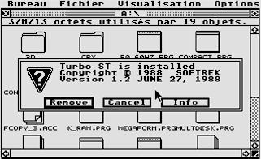
TURBO
ST
- 10 Ko [DOPEUR]
Programme qui gère
tous les lecteurs (FD/DD) sur Atari avec des helps.
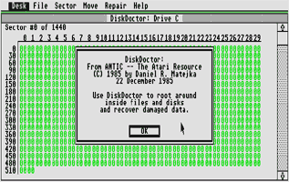
DISKDOCTOR
- 36 Ko [UTILITAIRE]
Permet de se familiariser
avec le bureau GEM (version anglaise).
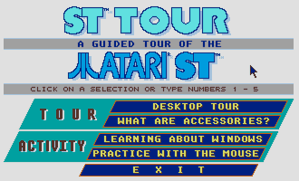
ST
TOUR -
65 Ko [APPRENTISSAGE]
Apprentissage du
clavier sur l'Atari.
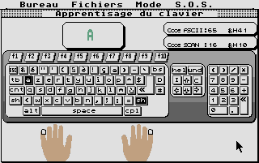
MEGAKEY
- 39
Ko [APPRENTISSAGE]
Très vieux
logiciel qui permet de faire du Midi facilement en se connectant à un
Synthé.
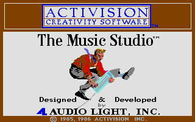
THE
MUSIC STUDIO -
95 Ko [MUSIQUE-MIDI]
MAKEICON est un
utilitaire pour fabriquer des icones.
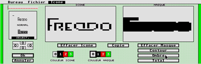
MAKEICON
au format
ST - 21 Ko [UTILITAIRES]
PRINTMASTER PLUS
permet d'imprimer des cartes.
PRINTMASTER
PLUS au
format MSA - 127 Ko [UTILITAIRES]
Dans la lignée
des crackers, voici SPY II : Cracking Construction Set.
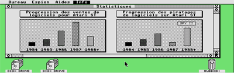
SPY
II v 1.2 au
format MSA - 79 Ko [CRACKERS]
Petit utilitaire
sous le GEM qui permet de faire parler votre ATARI ST.
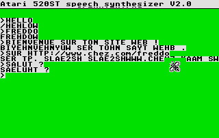
SPEECH
v 2.0 -
9 Ko [UTILITAIRES SONS ?]
Logiciel pour créer
des environnements 3D, des paysages comme des jeux avec déplacements.
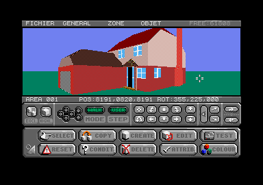
3D
CONSTRUCTION KIT -
234 Ko [UTILITAIRES 3D]
Logiciels de gestion
de bases de données.
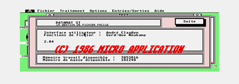
DATAMAT
ST v2.04+CALCOMAT v5.04 -
235 Ko [UTILITAIRES de GESTIONS]
Pour faire du graphisme
16 couleurs maxi.
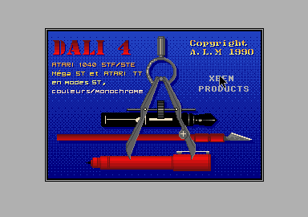
DALI
4 : disk
1 (354 Ko) - disk
2 (336 Ko) - 9 Ko
[UTILITAIRES GRAPHIQUE]
Permet d'émuler
le bureau GEM du mega STE ou TT (TOS v 2.05).
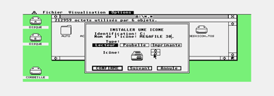
NEWDESK
(french) -
170 Ko [UTILITAIRES GEM]
Utilitaire graphique
sous le GEM.
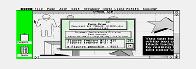
EASY-DRAW
v 2.01 -
308 Ko [UTILITAIRES GEM]
Premier language
de programmation livré avec un Atari ST.
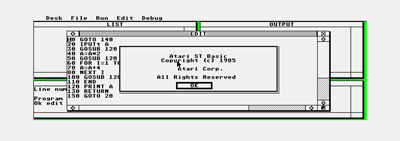
ATARI
ST BASIC -
158 Ko [PROGRAMMATION]
Utilitaire graphique
sous le GEM qui permet de faire des images bitmap.
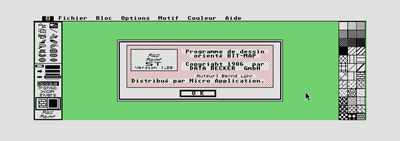
PLUS
PAINT v 1.20 -
68 Ko [UTILITAIRES GRAPHIQUE]
(merci à Fel'X/MJJPROD pour cet utilitaire)
Logiciel sous le
GEM, programmation ou jeu ?
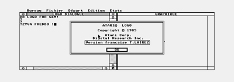
LOGO
- 50
Ko [UTILITAIRES ?]
(merci à Fel'X/MJJPROD pour cet utilitaire)
Premier archiveur de disque avant MSA.
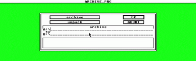
ARCHIVE
- 13
Ko [UTILITAIRE]
Pour tester vos disquettes et les réparer.
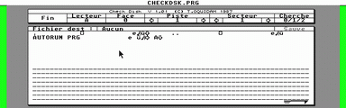
CHECK
DISK -
16 Ko [UTILITAIRE DISK]
Degas Elite pour Atari STF.
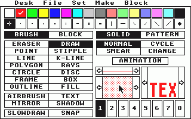
DEGAS
ELITE -
189 Ko [GRAPHISME]
Paintbox pour Atari STF.
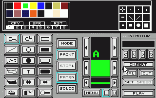
PAINTBOX
- 130
Ko [GRAPHISME]
La série des utilitaires très complet QUICK ST pour Atari ST.
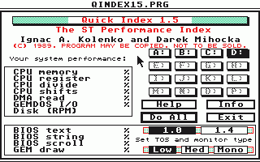
QUICK
ST -
78 Ko [UTILITAIRES]
The ANTIVIRUS sur ST (rappelez vous : "Kein virus...").
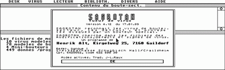
SAGROTAN
- 105
Ko [ANTIVIRUS]
Utilitaire graphique 512 couleurs sur ST.
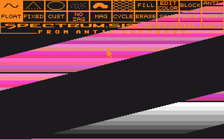
SPECTRUM
- 219
Ko [GRAPHISME]
La série des logiciels type "expander" de disquettes DD.
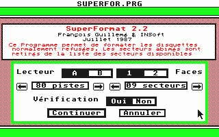
SUPER
FORMAT -
16 Ko [UTILITAIRES DISKS]
Premiére version de l'accelérateur des machines ST.
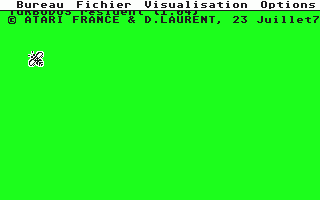
TURBO
DOS -
14 Ko [ACCELERATEUR STF]
Permet de changer le label d'un disque dur ST.
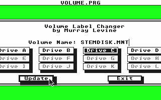
VOLUME
- 3
Ko [UTILITAIRES DISKS]
Emulateur du Sinclair ZX81 avec des programmes.
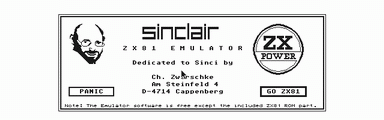
ZX81
EMUL -
50 Ko [EMULATEUR]
The Dune Killer Bootsector version 1.2.
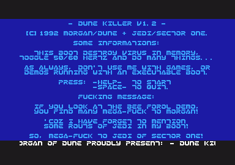
BOOT_12
- 7
Ko [BOOT UTILITAIRE]
Enfin mon boot pour démarrer plus rapidement son STE.
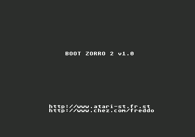
BOOTSTE
- 1
Ko [BOOT UTILITAIRE]
Emulateur couleur pour écran monochrome.
BIG
COLOR -
15 Ko [UTILITAIRES]
Une multitude de CPXs (accessoires) princiaplement pour STF et/ou STE.
CPX
- 320
Ko [UTILITAIRES]
Antivirus et accelérateur du pointeur de souris.
QMOUSE
PLUS -
6 Ko [UTILITAIRES]
Suite graphique assez puissant pour les démos.
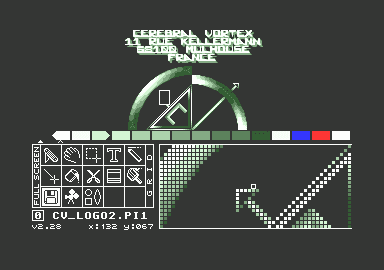
 NEOCHROME
- 377
Ko [GRAPHISMES]
NEOCHROME
- 377
Ko [GRAPHISMES]
La version 2 du MegaRipper selon FUZION.
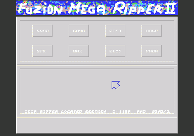
 MEGARIPPER
2 -
40 Ko [RIPPER]
MEGARIPPER
2 -
40 Ko [RIPPER]
Emulateur monochrome très complet pour les écrans couleurs.
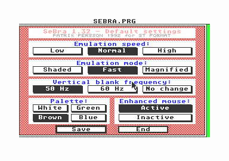
 SEBRA
- 6
Ko [EMULATEUR RESOLUTION]
SEBRA
- 6
Ko [EMULATEUR RESOLUTION]
Un petit ripper
d'images qui navigue dans la memoire du ST.
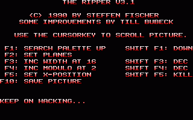
 RIPPER_3.1
- 6
Ko [RIPPER]
RIPPER_3.1
- 6
Ko [RIPPER]
| Ce
site peut contenir certains fichiers sur lesquels les droits de ©Copyright
sont toujours valides.
N'ayant pas les moyens de vérifier pour chacun d'entre eux s'ils sont tombés ou non dans le domaine public, ou si les auteurs et/ou editeurs ont renoncé a tout droit de propriété, l'auteur de ce site ainsi que la societe offrant les moyens d'hebergement ne sauraient être tenus responsables de quoi que ce soit. Les fichiers incriminés seront purement et simplement supprimés sur demande de leur auteur/editeur. |

[ Divers | Demos | Dentros | Mags | Trackers | Players | Utils ]